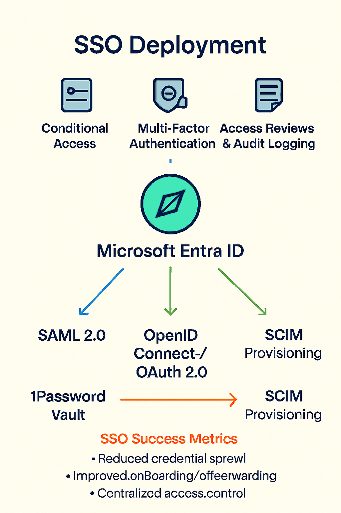

Challenge
With a growing portfolio of cloud applications, the organization needed a centralized identity strategy to reduce credential sprawl, improve security, and streamline user access. The solution required support for multiple protocols and provisioning standards. Using SSO meant we could leverage the strong Conditional Access infrastructure for these apps as well, and also MFA for authentication to these cloud applications.
Tools & Technologies
- Microsoft Entra Applications
- SAML 2.0
- OpenID Connect
- OAuth 2.0
- SCIM Provisioning Bridges
- Application-Specific Connectors
Implementation
- Configured SSO via Entra for all internet-facing apps
- Used SAML, OpenID Connect, and OAuth depending on app requirements
- Enabled SCIM provisioning for automated user lifecycle management
- Integrated apps including Tacton CPQ, Xalt, Snowflake, Qlik, Talend, 1Password Vault, Kronos UKG, Jira Service Management, and others
- Validated access flows and token issuance across protocols
- Documented authentication flows and provisioning logic for audit and support
Architecture Diagram
Impact
- Reduced password fatigue and credential reuse
- Improved security posture with centralized identity enforcement
- Streamlined onboarding and offboarding via SCIM
- Enabled seamless access to critical business platforms